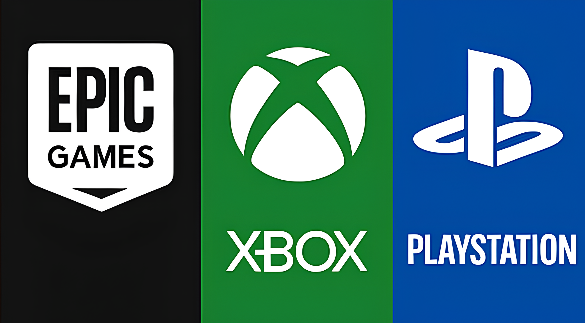
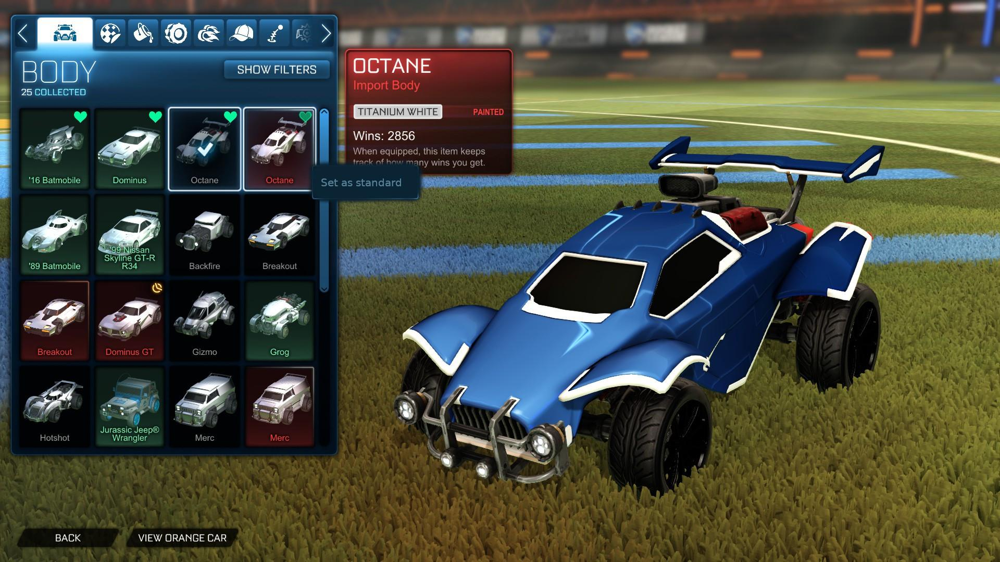
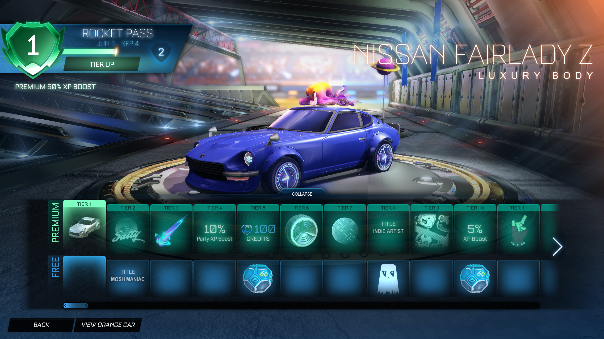
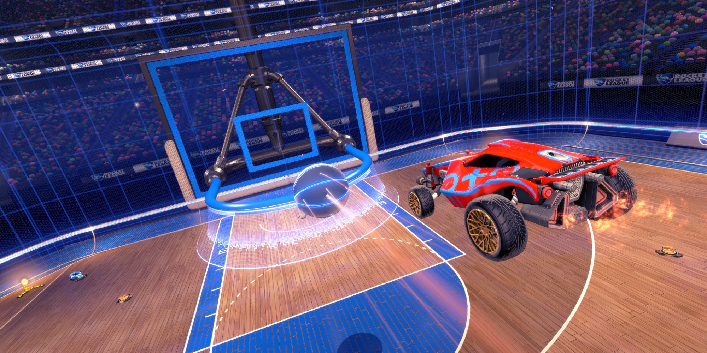
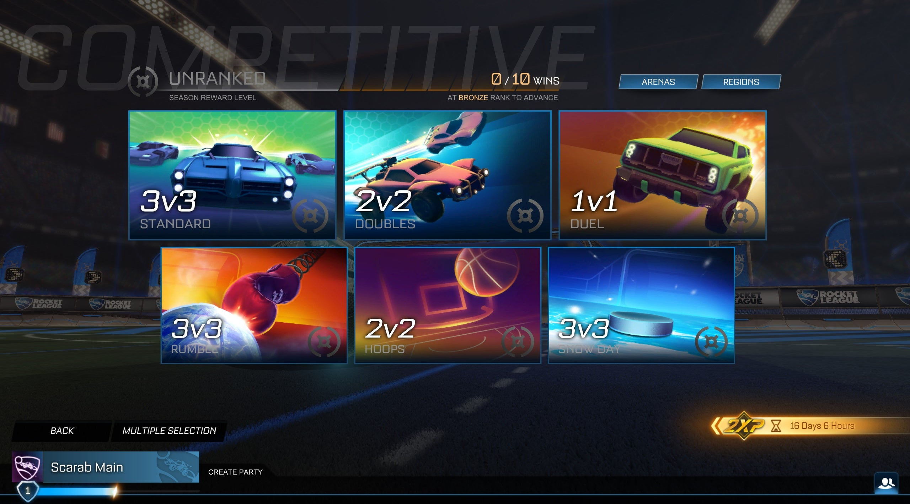
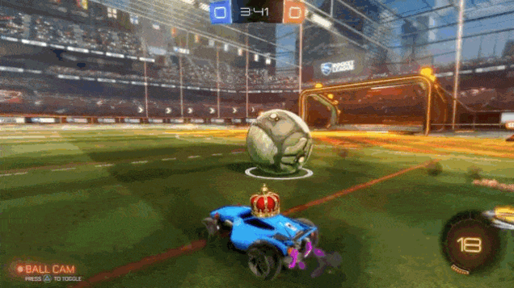
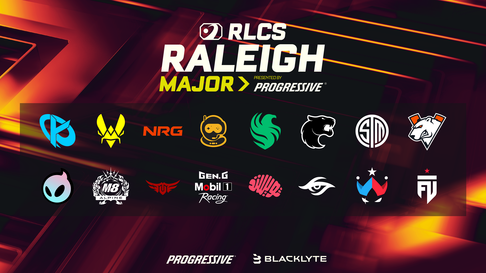

Onde Jogar: Plataformas e Periféricos
Rocket League é cross-platform, permitindo jogar com amigos
em qualquer sistema.
- PC (Epic Games Store)
- PlayStation 4/5
- Xbox One / Series X|S
- Nintendo Switch
Controle: recomendado pela maioria dos profissionais pela
precisão analógica.
Teclado e Mouse: totalmente viável para jogadores de alto
nível (realmente é pedir para se ferrar ao aprender).

Garagem: A Personalização do seu Veículo
A customização é a alma visual do jogo. Você pode modificar:
-
Chassi (Corpo): Diferentes carros possuem
"Hitboxes" (caixas de colisão) distintas. Os tipos mais
comuns são Octane (equilibrado), Dominus (longo e
plano) e Plank (baixo e largo).
-
Itens Cosméticos: Pinturas, rodas, impulsos (boost),
chapéus, antenas, rastros e as cobiçadas Explosões de Gol.
-
Dica de Design: A customização não altera a velocidade ou
força do carro, apenas como você percebe o contato com a bola.

Economia: Passes de Batalha e Créditos
A customização é a alma visual do jogo. Você pode modificar:
-
Rocket Pass: Um sistema de progressão por temporada. Ao
jogar, você sobe de nível e desbloqueia itens exclusivos. A
versão "Premium" custa créditos e geralmente devolve o valor
investido se você atingir níveis altos.
-
Créditos: A moeda virtual usada para comprar itens na
Loja de Objetos ou construir projetos (Blueprints).
-
Trocas (Trading): Jogadores podem trocar itens entre si,
criando um mercado dinâmico de itens raros e estéticos.

Modos de Jogo e Ecossistema
1x1 (Duelo), 2x2 (Duplas — o mais popular) e
3x3 (Padrão).
Modos Extras
Rumble: com poderes aleatórios.
Hoops: basquete com carros.
Snow Day: hóquei no gelo com disco.
Dropshot: destruir o chão do adversário para marcar.

Sistema de Rankings: A Escada Competitiva
O modo competitivo divide os jogadores por habilidade (MMR):
-
Patentes: Bronze, Prata, Ouro, Platina, Diamante, Campeão,
Grande Campeão e o prestigioso Lenda Supersônica (SSL).
-
Cada vitória aproxima você da próxima divisão, enquanto derrotas
subtraem pontos. O equilíbrio é mantido por
temporadas competitivas que reiniciam a cada poucos meses.

Gameplay Básica e Movimentação
A base do Rocket League é a gestão de Boost. Coletar as
cápsulas grandes (100%) ou as pequenas (12%) é vital.
- Pulo e Pulo Duplo: Essenciais para altura.
-
Powerslide (Derrapagem): Fundamental para manter a inércia
e virar o carro rapidamente.
-
Dodges (Esquivas): Clicar no pulo enquanto direciona o
analógico faz o carro girar, ganhando velocidade instantânea
(Supersônico).

Guia de Conceitos e Mecânicas
Aqui entramos no "manual técnico" do seu site:
Jogadas Terrestres
-
Chute e Defesa: O chute depende da parte do carro que toca
a bola (a quina frontal é a mais forte). Na defesa, o conceito de
"Sombra" (Shadow Defense) é vital: posicionar-se entre a
bola e o seu próprio gol, como uma sombra mesmo.
-
Rotação: O conceito mais importante em equipe. Significa
alternar posições entre quem ataca a bola, quem dá suporte e quem
defende, garantindo que o gol nunca fique vazio.
-
Condução (Dribbling) e Flicks: Equilibrar a bola no teto do
carro. Ao pular e dar um "dodge", você realiza um Flick, lançando
a bola com velocidade inesperada.
-
Breeze Flick: Um flick avançado que envolve uma rotação de
360 graus para usar a força centrífuga do carro e disparar a bola.
Jogadas Aéreas
-
Aéreos e Wall Drags: Voar para atingir a bola no alto. O
Wall Drag acontece quando você leva a bola da parede para o ar,
mantendo o controle colado ao nariz do carro.
-
Double Tap: Bater a bola contra a parede acima do gol
adversário e subir para finalizar no rebote, sem que ela toque o
chão.
-
Flip Reset: Talvez a mecânica mais técnica. Ao encostar as
quatro rodas na bola no ar, o jogo entende que você pousou e
"reseta" seu pulo, permitindo um segundo toque explosivo em
qualquer momento.
-
Combinação de Mecânicas: O auge do jogo. Um jogador de alto
nível pode iniciar um Wall Drag, transitar para um Air Dribble,
realizar um Flip Reset no meio do caminho e finalizar com um
Double Tap.


RLCS
A Rocket League Championship Series (RLCS) é o principal
circuito competitivo oficial do Rocket League, reunindo as
melhores equipes do mundo em torneios regionais e
internacionais durante toda a temporada. Organizada pela
Psyonix e Epic Games, a competição possui
premiações milionárias e representa o mais alto nível técnico
do jogo.
Times como Team Vitality, G2, Karmine Corp e a
brasileira FURIA disputam o título mundial através de
partidas extremamente rápidas, estratégicas e mecânicas, onde
pequenos erros podem decidir séries inteiras.
A RLCS também é responsável por popularizar novas mecânicas e
estilos de jogo, servindo como referência para jogadores
competitivos que desejam evoluir dentro do cenário profissional.

Rocket League Sideswipe: Rocket League no Mobile
Rocket League Sideswipe é a versão mobile oficial do Rocket
League, trazendo a mesma essência competitiva para celulares
Android e iOS, porém com uma jogabilidade em 2D muito
mais rápida e acessível.
-
Partidas rápidas de 1x1 e 2x2 com duração reduzida,
perfeitas para jogar em qualquer lugar.
-
Controles simplificados e adaptados para tela touch,
permitindo aprender mecânicas rapidamente.
-
Possui sistema de rankings competitivo semelhante ao Rocket
League tradicional, incluindo Bronze até Campeão Supersônico.
-
Mesmo sendo mais simples visualmente, o jogo possui
mecânicas avançadas como resets, jogadas aéreas e controle
de boost.
-
Também conta com personalização de carros, temporadas
competitivas e recompensas exclusivas conectadas à conta da Epic
Games.
O Sideswipe é uma excelente porta de entrada para novos
jogadores e uma ótima forma de treinar reflexos, posicionamento e
leitura de jogo.